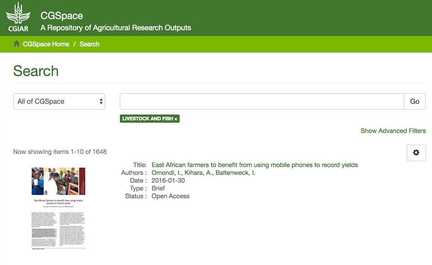

May, 2016
2016-05-01
- Since yesterday there have been 10,000 REST errors and the site has been unstable again
- I have blocked access to the API now
- There are 3,000 IPs accessing the REST API in a 24-hour period!
# awk '{print $1}' /var/log/nginx/rest.log | uniq | wc -l
3168
- The two most often requesters are in Ethiopia and Colombia: 213.55.99.121 and 181.118.144.29
- 100% of the requests coming from Ethiopia are like this and result in an HTTP 500:
GET /rest/handle/10568/NaN?expand=parentCommunityList,metadata HTTP/1.1
- For now I’ll block just the Ethiopian IP
- The owner of that application has said that the
NaN(not a number) is an error in his code and he’ll fix it
2016-05-03
- Update nginx to 1.10.x branch on CGSpace
- Fix a reference to
dc.type.outputin Discovery that I had missed when we migrated todc.typelast month (#223)

2016-05-06
- DSpace Test is down,
catalina.outhas lots of messages about heap space from some time yesterday (!) - It looks like Sisay was doing some batch imports
- Hmm, also disk space is full
- I decided to blow away the solr indexes, since they are 50GB and we don’t really need all the Atmire stuff there right now
- I will re-generate the Discovery indexes after re-deploying
- Testing
renew-letsencrypt.shscript for nginx
#!/usr/bin/env bash
readonly SERVICE_BIN=/usr/sbin/service
readonly LETSENCRYPT_BIN=/opt/letsencrypt/letsencrypt-auto
# stop nginx so LE can listen on port 443
$SERVICE_BIN nginx stop
$LETSENCRYPT_BIN renew -nvv --standalone --standalone-supported-challenges tls-sni-01 > /var/log/letsencrypt/renew.log 2>&1
LE_RESULT=$?
$SERVICE_BIN nginx start
if [[ "$LE_RESULT" != 0 ]]; then
echo 'Automated renewal failed:'
cat /var/log/letsencrypt/renew.log
exit 1
fi
- Seems to work well
2016-05-10
- Start looking at more metadata migrations
- There are lots of fields in
dctermsnamespace that look interesting, like:- dcterms.type
- dcterms.spatial
- Not sure what
dctermsis… - Looks like these were added in DSpace 4 to allow for future work to make DSpace more flexible
- CGSpace’s
dcregistry has 96 items, and the default DSpace one has 73.
2016-05-11
Identify and propose the next phase of CGSpace fields to migrate:
- dc.title.jtitle → cg.title.journal
- dc.identifier.status → cg.identifier.status
- dc.river.basin → cg.river.basin
- dc.Species → cg.species
- dc.targetaudience → cg.targetaudience
- dc.fulltextstatus → cg.fulltextstatus
- dc.editon → cg.edition
- dc.isijournal → cg.isijournal
Start a test rebase of the
5_x-prodbranch on top of thedspace-5.5tagThere were a handful of conflicts that I didn’t understand
After completing the rebase I tried to build with the module versions Atmire had indicated as being 5.5 ready but I got this error:
[ERROR] Failed to execute goal on project additions: Could not resolve dependencies for project org.dspace.modules:additions:jar:5.5: Could not find artifact com.atmire:atmire-metadata-quality-api:jar:5.5-2.10.1-0 in sonatype-releases (https://oss.sonatype.org/content/repositories/releases/) -> [Help 1]
- I’ve sent them a question about it